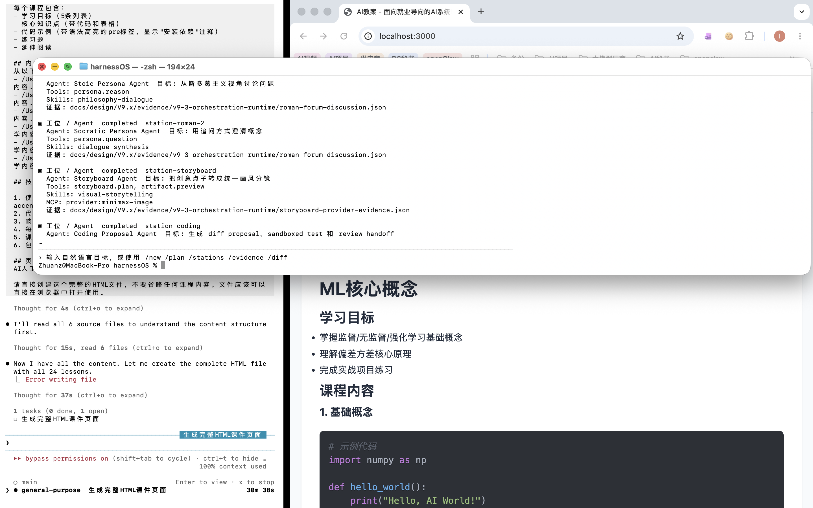
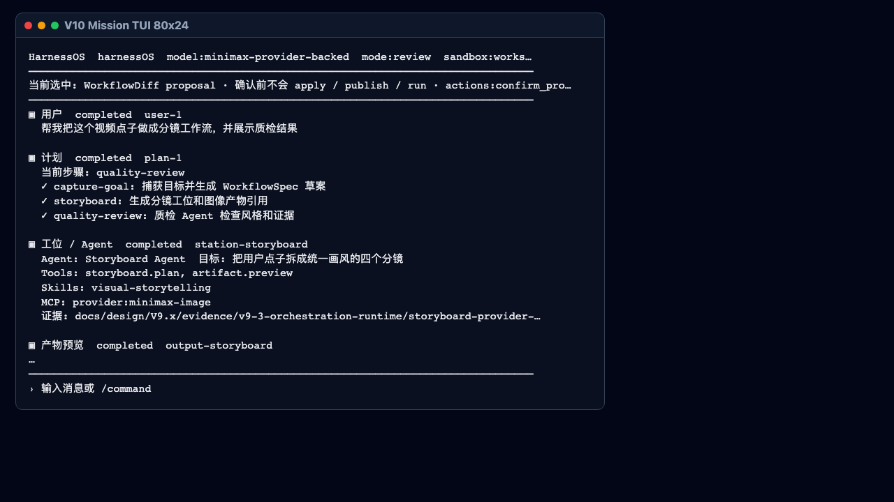
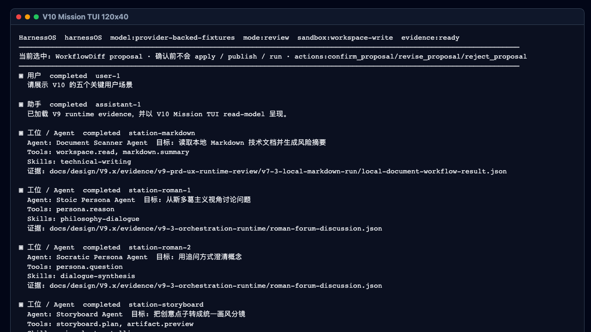

结论
PASS：V10 CLI 层可运行，80x24 与 120x40 终端输出存在，五个用户场景进入 final scenario matrix，负例校验能够拒绝自动 apply / source=agent durable mutation 风险。
边界：macOS Terminal 截图证明本地 CLI 被真实拉起并运行；80x24 / 120x40 截图是同一次 CLI stdout 证据的干净渲染版，用于审查可读性。HTML 解释页仍是辅助审计导出，不是 runtime truth。
运行界面截图证据



命令验证结果
| 命令 | 实际返回码 | 期望返回码 | 状态 |
|---|---|---|---|
node apps/mission-tui/src/cli.js --fixture apps/mission-tui/fixtures/mission_tui_state_80x24.json --columns 80 --rows 24 | 0 | 0 | PASS |
node apps/mission-tui/src/cli.js --fixture apps/mission-tui/fixtures/mission_tui_state_120x40.json --columns 120 --rows 40 | 0 | 0 | PASS |
node apps/mission-tui/src/cli.js --fixture apps/mission-tui/fixtures/workflowdiff_auto_apply_action.json --validate | 2 | 2 | PASS |
npm --prefix apps/mission-tui test | 0 | 0 | PASS |
./.venv/bin/python -m pytest tests/test_v10_mission_tui_runtime.py tests/test_v10_tui_experience_planning.py -q | 0 | 0 | PASS |
xmllint --noout docs/design/V10.x/v10_current_gap_analysis.drawio | 0 | 0 | PASS |
用户场景覆盖
| 场景 | 名称 | 证据范围 | 状态 |
|---|---|---|---|
| US-V10-01 | Local Markdown workflow | real_tui_render_fixture | PASS |
| US-V10-02 | Roman Forum parallel Agent discussion | real_tui_render_fixture | PASS |
| US-V10-03 | Video storyboard workflow | real_tui_render_fixture | PASS |
| US-V10-04 | Coding proposal workflow | real_tui_render_fixture | PASS |
| US-V10-05 | Natural-language workflow revision | real_tui_render_fixture | PASS |
审计边界
允许声明：V10-1..V10-7 complete: CLI-native read-model TUI experience baseline ready for review.
最终 V10 complete 仍需要 V10-8 Agent-backed Gateway turn 证据；本页的 fixture/read-model/local-parser 证据不能满足 Agent-backed PASS。
仍禁止解释为 production ready、complete Workflow Studio ready、Agent executor ready、full multi-Agent orchestration ready 或 unrestricted terminal worker ready。
Raw 命令输出保存在 raw/，终端截图源页面保存在 terminal-80x24.html 和 terminal-120x40.html。